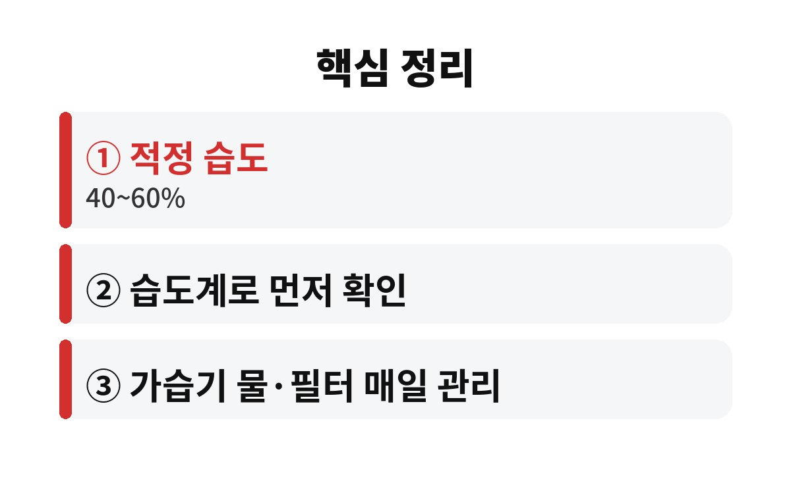

아침 목 칼칼함은 난방으로 실내 습도가 40% 아래로 떨어질 때 가장 흔히 생기며, 적정 습도는 보통 40~60%로 알려져 있다. 난방을 켜고 자는 직장인이라면, 가습기를 틀어도 목이 계속 아픈 이유가 궁금하지 않은가?
11월에 접어들면 보일러와 히터가 돌아가기 시작한다. 공기는 빠르게 말라가고, 자고 일어나면 목이 잠긴 듯한 느낌이 든다. 감기라고 생각해 약부터 찾는 경우가 많지만, 실제로는 환경 문제인 경우가 적지 않다.

잠을 자는 동안에는 침 분비가 줄어든다. 여기에 난방으로 공기까지 건조하면 목 점막이 쉽게 마른다. 입으로 숨을 쉬는 습관이 있다면 더욱 심해질 수 있다.
목 점막은 촉촉할 때 먼지와 세균을 막아 주는 방어막 역할을 한다. 이 막이 마르면 작은 자극에도 따갑고 칼칼한 느낌이 든다. 그래서 아침 목 칼칼함은 하루 중 기상 직후에 가장 두드러지는 경우가 많다.
목 점막이 마르면 기침이 늘고 목소리가 쉬는 증상이 함께 올 수 있다. 특히 말을 많이 하는 직장인이라면 오후까지 칼칼함이 이어지기도 한다. 이럴 때 사탕이나 목캔디로만 버티면 일시적으로는 편하지만, 원인인 건조한 환경은 그대로 남는다. 따라서 증상을 가리기보다 잠자리 환경을 먼저 점검하는 것이 순서이다.
또 하나 놓치기 쉬운 것이 커피와 술이다. 카페인과 알코올은 몸의 수분을 빼앗아 목을 더 마르게 할 수 있다. 저녁 늦게 마신 커피 한 잔이 다음 날 아침 목 상태를 좌우하는 경우도 있다. 아침 목 칼칼함 때문에 고민이라면 전날 저녁 음료부터 돌아보면 원인이 보이기도 한다.
일반적으로 실내 적정 습도는 40~60% 정도로 알려져 있다. 이보다 낮으면 목과 코 점막이 마르기 쉽고, 피부와 눈도 함께 건조해질 수 있다. 반대로 60%를 넘으면 곰팡이와 집먼지진드기가 늘 수 있어 습도를 끝없이 높이는 것도 답이 아니다.
가장 먼저 할 일은 습도계를 두는 것이다. 감으로 판단하면 틀리기 쉽다. 침실에 작은 습도계 하나만 있어도 내 방이 몇 퍼센트인지 바로 알 수 있다.
첫 번째 함정은 가습기를 침대에서 너무 먼 곳에 두는 것이다. 습기가 닿기 전에 흩어져 효과가 약해질 수 있다. 두 번째는 물통과 필터를 오래 닦지 않는 것이다. 관리가 안 된 가습기는 오히려 세균이 섞인 수증기를 내뿜을 수 있다.
세 번째는 보일러를 너무 높게 틀고 가습기만 믿는 경우다. 실내 온도가 높을수록 공기는 더 빨리 마른다. 난방 온도를 조금 낮추는 것만으로도 목이 한결 편해질 수 있다. 가습기 물은 매일 갈고, 물통은 자주 세척하는 것이 기본이다.
침실 문을 닫고 자는지, 가습기를 몇 시간 켜 두는지에 따라서도 습도는 크게 달라진다. 하루 이틀 습도계 숫자를 기록해 보면 내 집의 패턴이 보이고, 그 숫자에 맞춰 난방 온도와 가습 시간을 조절하면 훨씬 효율적이다. 비싼 제품보다 꾸준한 관리가 결과를 좌우한다는 점을 기억하면 좋겠다.
마스크를 쓰고 자는 방법을 권하는 경우도 있지만, 호흡이 답답하다면 무리하지 않아도 된다. 코로 숨 쉬기 어려운 비염이 있다면 입 호흡이 늘어 목이 더 마르므로, 이 경우에는 비염 관리도 함께 필요하다.
잠들기 전 미지근한 물을 한두 모금 마시고, 침대 머리맡에 물컵을 둔다. 젖은 수건을 널어 두는 것도 간단한 보조 방법이다. 환기는 하루 한두 번 짧게 하되, 아침에 일어나자마자 창문을 열어 공기를 바꿔 주는 습관이 도움이 된다.
그래도 목 통증이 2주 넘게 이어지거나, 열이나 기침, 삼킬 때 통증이 함께 나타난다면 단순 건조가 아닐 수 있다. 이럴 때는 이비인후과에서 진료를 받는 것이 안전하다.
아침 목 칼칼함은 대부분 습도, 호흡 습관, 전날의 음료 같은 생활 요인에서 비롯된다. 습도계로 숫자를 확인하고, 40~60% 범위에 맞추려는 작은 노력만으로도 겨울 아침이 훨씬 편안해질 수 있다. 오늘부터 하나씩 실천해 보기를 권한다.
오늘 밤 내 침실 습도는 몇 퍼센트일지 궁금하지 않은가? 도움이 되었다면 구독으로 다음 건강 정보도 받아 보시기 바란다.
이 글은 일반적인 건강 정보이며 진단·치료를 대신하지 않는다. 증상이 지속되면 반드시 전문의와 상담하기 바란다.